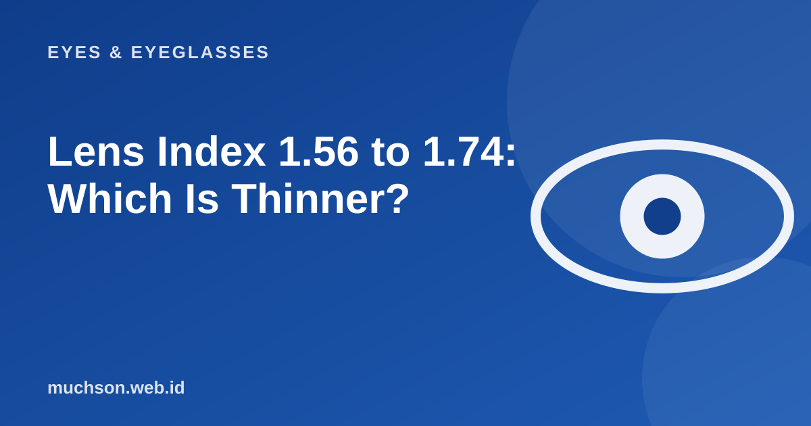

Home › Articles › Eyes & Eyeglasses
Eyes & EyeglassesLens Index 1.56 to 1.74: Which Is Thinner?
A strong minus in ordinary lenses makes the edge as thick as the bottom of a bottle. The fix is not only a small frame but also a higher lens index. This calculator shows the thickness difference for your prescription.

What is lens index?
The refractive index shows how strongly a lens material bends light. A material with a high index bends light more strongly, so for the same power the lens can be made thinner and lighter. Common values on the market are 1.50 (standard), 1.56, 1.60, 1.67 and 1.74. The higher the number, the thinner and usually the more expensive.
Text description of the diagram
- Index 1.50: 4.9 mm
- Index 1.56: 4.5 mm
- Index 1.60: 4.3 mm
- Index 1.67: 4 mm
- Index 1.74: 3.8 mm
Which is worth buying?
| Power (minus) | The index that is usually enough | Notes |
|---|---|---|
| Up to about 2.00 | 1.50 - 1.56 | A standard lens is already thin enough |
| 2.00 to 4.00 | 1.56 - 1.60 | The difference in thickness starts to show |
| 4.00 to 6.00 | 1.60 - 1.67 | Helpful, especially with a large frame |
| Above 6.00 | 1.67 - 1.74 | Consider a small, round frame |
This table is only a general guide. The frame size, shape, and any difference between the right and left numbers change the best choice. Talk to an optical shop that can cut the lens to fit your frame.
Tips to make lenses look thinner
- Choose a small to medium frame, and avoid oversize frames for a strong minus.
- Choose a thick or coloured frame that disguises the lens edge.
- Make sure the lens centre (PD) is right in front of the pupil, because an error makes one edge thicker.
- An anti-reflective coating reduces the shine of the lens edge and makes it look cleaner.